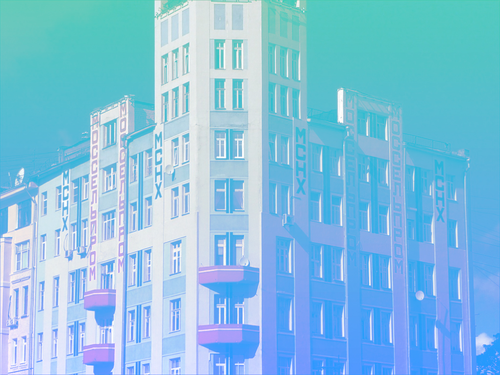

Дом Моссельпрома
Дом Моссельпрома в Москве — памятник русского конструктивизма и авангарда, расположенный на углу Калашного, Нижнего Кисловского и Малого Кисловского переулков. Историческую и культурную ценность представляет как само здание, построенное по проекту архитектора Н. Д. Струкова, так и панно, выполненное художниками А. М. Родченко и В. Ф. Степановой, а также воспроизведённый на доме рекламный слоган «Нигде кроме, как в Моссельпроме», авторство текста которого принадлежит В. Маяковскому.
История создания
В начале XIX в. на этом участке находилась древняя Церковь Иоанна Милостивого со дворами её причта. Как и многие московские церкви, сгоревшие во время пожара 1812 г., она была закрыта, а участок перешёл к частным лицам. Здесь к 1817 г. было выстроено несколько небольших каменных зданий. В одном из них в 1818—1819 гг. жила семья С. Ф. Мочалова, отца и учителя будущего знаменитого актера П. С. Мочалова. В 1912 году новый владелец, купец А. И. Титов, задумал на месте старых зданий, в которых находился трактир и при нём извозчичья стоянка, построить семиэтажный доходный дом. Строительство дома, порученное архитектору Н. Д. Струкову, велось в крайней спешке и к весне 1913 года все семь этажей здания были возведены. Однако ранним утром 22 марта 1913 года одна из стен доходного дома обрушилась, завалив переулок битым кирпичом, бревнами и обломками железа на высоту двух этажей. При судебном разбирательстве выяснилось, что причинами катастрофы были спешка, нарушение строительных правил и плохое качество строительных материалов. Суд оштрафовал купца Титова на 100 рублей, а автора проекта архитектора Струкова, учитывая что это было уже третье обвалившееся здание его авторства, приговорил к шестинедельному заключению. Впоследствии из-за трудностей военного времени к 1917 году удалось построить части здания, выходящие на М. Кисловский переулок (№ 3) и Калашный (№ 4), а на углу было выведено только пять этажей.
В 1923—1925 гг. пятиэтажное здание было надстроено ещё двумя этажами по проекту инженера В. Д. Цветаева и архитектора Д. М. Когана под склады и конторы для Моссельпрома — пищевого треста Московского Совета Народного Хозяйства, который объединял мукомольные, кондитерские и шоколадные фабрики, пивоваренные заводы и табачные предприятия. Венчающая здание шестиугольная башня с зубцами была спроектирована в 1925 году профессором ВХУТЕМАСа А. Ф. Лолейтом. В 1925 году в здание, называемое «первым советским небоскрёбом», въехал Моссельпром, основанный в 1922 году как объединение по переработке сельскохозяйственной продукции. На первом этаже дома Моссельпрома разместились склад муки и администрация московских продуктовых магазинов и пивных. Выше были дирекция, бухгалтерия, комячейка и местком. Часть здания была жилой, там поселили рабочих фабрики имени Бабаева.
Панно, благодаря которому здание стало известным, было выполнено по проекту художников А. М. Родченко и его супруги В. Ф. Степановой. Стена была неоштукатурена, надписи делались прямо на кирпичах, а натюрморты — на фанерных щитах. На стене, которая выходила в Малый Кисловский переулок Родченко изобразил, среди прочего, конфеты «Мишка косолапый», молоко и пиво «Друг желудка», папиросы «Герцеговина Флор». На стенах дома красовалась яркая реклама: «Моссельпром», «Дрожжи», «Пиво и Воды», «Конфекты» и зазывный слоган: «Нигде кроме, как в Моссельпроме», авторство текста которого принадлежит Владимиру Маяковскому.
В 1930-е годы со стен дома реклама была стёрта, а с 1937 года здание вновь стало жилым домом. В доме жили военачальники И. И. Вацетис, И. Э. Якир, М. Н. Шарохин, Г. И. Хетагуров, И. В. Тюленев; в 1964—1969 годах — литературовед и лингвист-русист В. В. Виноградов, в память о котором на фасаде дома в 1976 году была установлена мемориальная доска.
Современное состояние
Внешнее оформление здания было воссоздано в 1997 году по проекту архитектора Е. Овсянниковой. Однако в настоящее время штукатурка и надписи вновь нуждаются в реставрации.
Сейчас в здании находится факультет РАТИС и мастерская художника Ильи Глазунова.